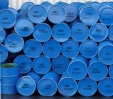

Nederland levert zich over aan instabiele regimes doordat het kabinet te weinig investeert in duurzame energie. In een interview met nu.nl beweert Maxime Verhagen dat Nederland minder afhankelijk wordt van oliestaten. Fractievoorzitter Jolande Sap vindt dat klinkklare onzin. Het kabinet investeert niet in windenergie en vervuilt extra door de maximumsnelheid te verhogen
Tags: Libië, mensenrechten, migratie en asiel
za 19 feb 2011, 18:29u -
Vandaag werden overal in het land acties gehouden voor een goed natuurbeleid onder de titel 'Hart voor Natuur'. GroenLinks Kamerleden en Provinciale Statenkandidaten steunen de actie van 30 natuur- en milieuorganisaties voor behoud van natuur en landschap in Nederland door vanmiddag bij zoveel mogelijk acties aanwezig te zijn.
Fractievoorzitter Jolande Sap was aanwezig bij de manifestatie Hart voor Natuur in Haarzuilens.
Jolande Sap: "We hebben de natuur hard nodig voor ons welzijn, het houdt ons gezond en maakt ons gelukkig. Terecht trekken natuur- en milieuorganisaties aan de bel, omdat het kabinet drastisch in ons groen snoeit."
Tags: natuur, ps2011
GroenLinks is niet enthousiast over het gebrek aan visie dat minister Kamp van Sociale Zaken en Werkgelegenheid vandaag in De Volkskrant schetst. Kamp wil de ontslagbescherming en ww wijzigen en de pensioenleeftijd verhogen, maar biedt geen enkel perspectief op nieuwe banen en socialer beleid.
Tags: justitie; sociale zaken; arbeidsrecht, pensioen, sociale zekerheid, ww
Het lijkt vrijwel zeker dat Nederlandse pantservoertuigen ingezet zijn om demonstraties in Bahrein hardhandig te beëindigen. Dit is te zien op beelden die deze week op YouTube verschenen. GroenLinks Tweede Kamerlid Arjan El Fassed vraagt minister Rosenthal van Buitenlandse Zaken, om opheldering over de inzet van het Nederlandse defensiemateriaal.
Tags:buitenlandse zaken, midden-oosten, wapenexport, wapenhandel